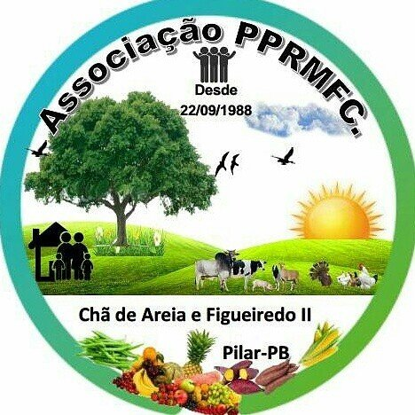
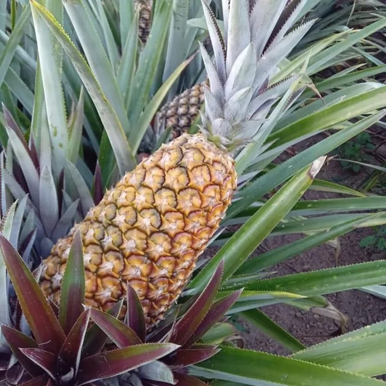
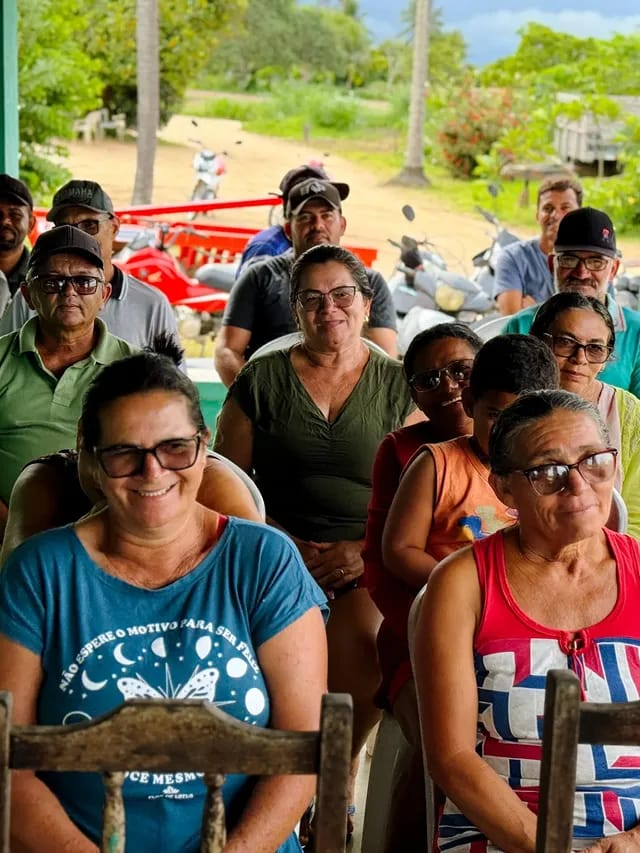
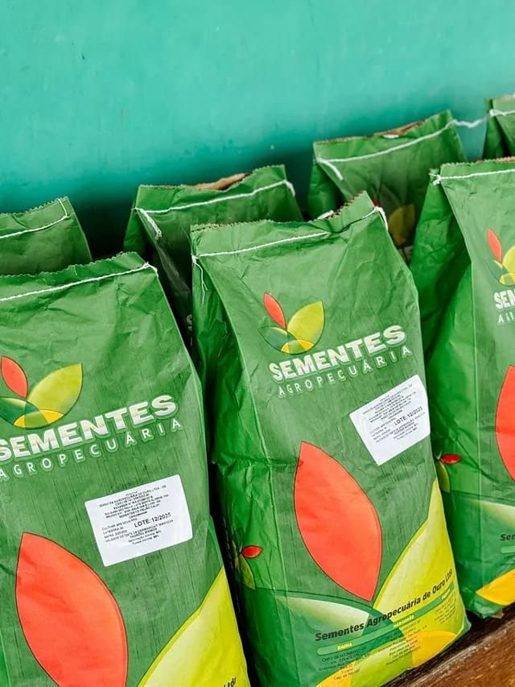
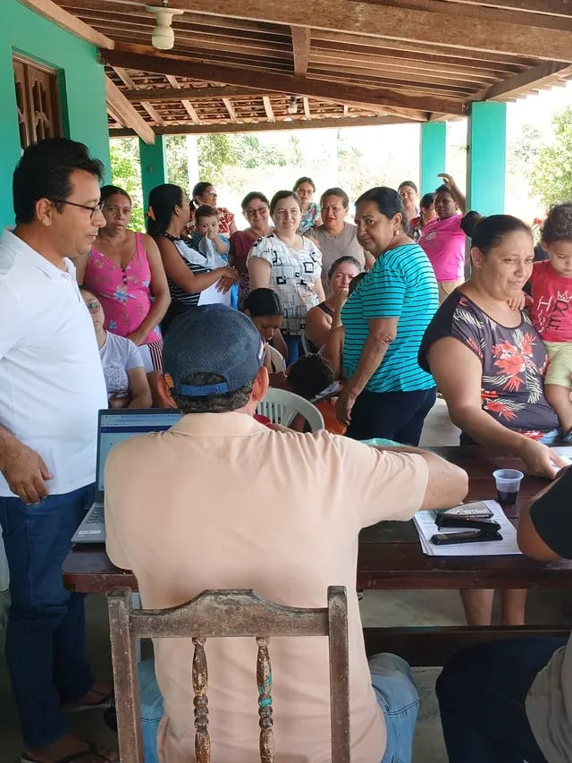

Pilar - PB
A associação atua no município de Pilar - PB, reunindo pequenos produtores rurais, moradores e familiares das comunidades Chã de Areia e Figueiredo II.
Nosso objetivo é fortalecer a agricultura familiar, promover o desenvolvimento social e melhorar a qualidade de vida da comunidade.



